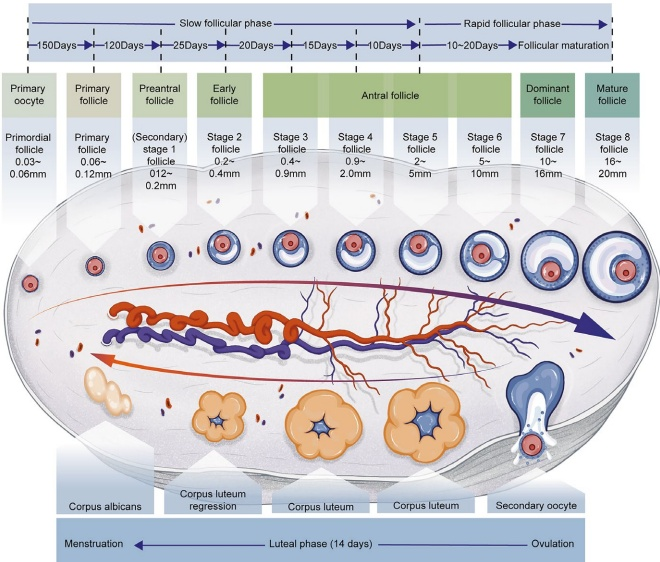

1.2 Ovarian Cycle and Ovulation
The ovary is a female genital gland with both reproductive and endocrine functions. At different stages of a woman's life (from puberty to menopause), the (cyclical) function and morphology of her ovaries change considerably [2].
1.2.1 Development and Regulation of Follicles Before Puberty
At 6 weeks to 8 weeks of the embryonic stage, the primordial germ cells undergo continuous mitotic divisions, which result in more cells with increasing size, referred to as oogonia, approximately 600,000 in number. From the 11th–12th week of embryonic development, the oogonia enters the first meiosis and rests in the prediplotene stage. At this time, they are called primary oocytes, and their number reaches a peak at 16 to 20 weeks of embryonic development, with the two ovaries containing a total of 6 to 7 million germ cells, of which 1/3 are oogonia, and 2/3 are primary oocytes. Between the 16th week of embryonic development and 6 months after birth, a monolayer of spindle-shaped pregranulosa cells surrounds a primary oocyte that rests in the diplotene stage of meiosis to form a primordial follicle, which is the basic female reproductive unit and the only form of oocyte reserve. Follicles continue to atresia during fetal life, with about 2 million remaining at birth. Subsequently, most follicles degenerate during childhood, leaving only about 300,000 by puberty.
1.2.2 Development and Maturation of Follicles After Puberty
From puberty until menopause, the ovary undergoes cyclic changes in morphology and function, known as the ovarian cycle. The process of follicular development from autonomous to regular maturation relies on gonadotropin regulation. A batch of follicles (3–11) will develop for women entering their reproductive years every month. After recruitment and selection, only one dominant follicle will reach full maturity and be discharged as an egg. Meanwhile, the rest of the follicles will deteriorate independently through the apoptosis mechanism called follicular atresia. In a woman's lifetime, typically, only 400 to 500 follicles will develop to maturity and be released as eggs, representing only about 0.1% of their total number.
Primordial follicle: The transformation of the primordial follicle into a primary follicle is the starting point of follicular development. The primordial follicle, which can lie dormant in the ovary for decades, consists of a primary oocyte surrounded by a single layer of spindle-shaped pregranulosa cells. It takes more than 9 months for a primordial follicle to develop into a preantral follicle, 85 days for a preantral follicle to develop into a mature follicle that undergoes a sustained growth phase (grade 1 to grade 4 follicles), and an exponential growth phase (grade 5 to grade 8 follicles).
Preantral follicle: As the body grows and develops, the function of the adrenal glands gradually perfects, and the androgens produced by the reticular zones and adipose tissue in the adrenal cortex gradually increase, so that androgens in the blood are at a high level. The primordial follicle begins to develop autonomously in response to androgens, with the granulosa cells within the follicle generating follicle-stimulating hormone (FSH) receptors, estrogen (E) receptors, and androgen (A) receptors, and the thecal cell generating luteinizing hormone (LH) receptors. These receptors equip the granulosa cells and thecal cells to be responsive to the above hormones. However, the number of receptors produced at this time is relatively small. The above development is a long process—after 270 days or more of development, the primordial follicle becomes a preantral follicle, also known as a class I secondary follicle.
Antral follicle: Under the continuous action of FSH, the granulosa cells of the preantral follicle produce a small amount of estrogen. Under the combined effect of estrogen and FSH, follicular fluid generated between the granulosa cells increases. Meanwhile, the follicle enlarges up to 500 $ \mu $m in diameter, called the antral follicle. In response to androgen stimulation, FSH receptors on granulosa cells and LH receptors on thecal cells in the antral follicle constantly increase, resulting in enhanced sensitivity of these cells to signals. With more receptors and cells, more FSH ligands are required to support follicular growth and development. However, due to the underdevelopment of the hypothalamus before puberty, the hypothalamic-pituitary-ovarian (HPO) axis remains suppressed long-term, resulting in a relatively stable and low level of FSH and LH. With low FSH levels, the antral follicle can only develop into a class 4 follicle, which takes about 60 days.
- Preovulatory follicle: Upon reaching puberty, as the hypothalamus develops toward maturity, gonadotropin-releasing hormone (GnRH) production progressively increases. In response to GnRH, FSH and LH produced by the pituitary gland continue to increase. When the blood FSH level exceeds a certain threshold, a batch of class 4 follicles (3–11 follicles) begin to develop simultaneously a “recruitment” process. FSH acts on its receptors on the surface of granulosa cells, causing them to produce estrogen. Sensing the estrogen concentration, the hypothalamus and pituitary gland mildly inhibit FSH production by negative feedback. Only one follicle with the lowest threshold (the most sensitive, with the most receptors) can continue to grow and develop properly under low FSH levels and eventually become the dominant follicle. Meanwhile, the remaining follicles stop developing and then degenerate (atresia). This process described above is called “selection”. The dominant follicle continues to develop in response to FSH stimulation. Concurrently, its granulosa cells generate LH and prolactin receptors in preparation for generating the corpus luteum and luteinization. Eventually, after about 25 days, the class 4 follicle develops into a preovulatory follicle (class 8 follicle) characterized by increased follicular fluid, enlarged follicular cavity, and a significant increase in follicular volume, with a diameter of up to 18 mm to 23 mm (Fig. 1.6).
